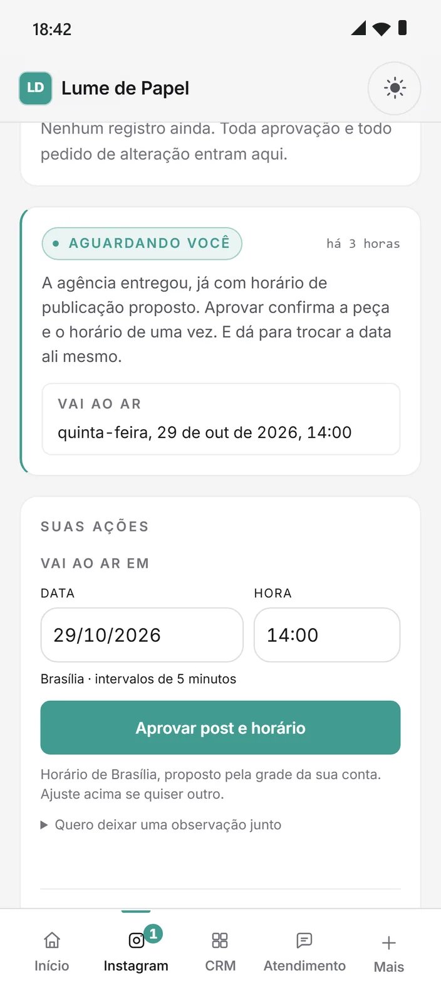
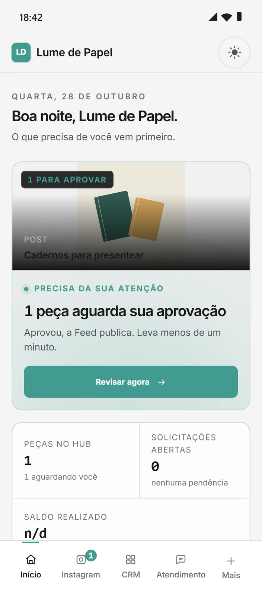

Sábado, 22:47
O cliente chama. O Agente responde na hora.
Tira a dúvida, entende o pedido e pergunta o que falta, de dia ou de madrugada. Sem fila.
A Feed é uma agência de IA aplicada e marketing de Ribeirão Preto e Bebedouro (SP). Automatiza atendimento e vendas e cuida da marca de pequenas e médias empresas em todo o Brasil.
De ponta a ponta
Este é o caminho que o seu cliente faz, e a Feed cuida de cada trecho. Toque onde a sua empresa trava.
01Trecho 01 de 06
Antes do anúncio e do post vem a cara da empresa. A Feed desenha a identidade visual: logo, cores, letra, voz e como tudo aparece na rua e na tela.
Manual da marca · Lume de Papelprojeto autoral da Feed
Toque numa peça. Cada uma mostra o que entra no manual.
Ver o projeto completo02Trecho 02 de 06
A Feed cria e acompanha campanhas de tráfego pago com Meta Ads e Google Ads. A pessoa toca no anúncio e cai direto no WhatsApp, onde o Agente já está esperando.
lumedepapel Capa azul ou verde. Você escolhe, a gente embrulha.

cadernos para presente
Patrocinado
Lume de Papelwww.lumedepapel.example
Cadernos para presente | Lume de Papel
Capa dura, costura à mão e embrulho incluso. Chame no WhatsApp e escolha a cor.
Chamar no WhatsAppO painel do mês · Lume de Papelexemplo ilustrativo
312contatos no WhatsApp em um mês de exemplo
dia 1dia 30
+1.284seguidores novos em 30 dias, no exemplo
dia 1dia 30
9.730visualizações do perfil no Google, no exemplo
semana 1semana 4
No mesmo exemplo, 412 rotas pedidas até a loja pelo Google Meu Negócio.
03Trecho 03 de 06
Instagram, Facebook e Google Meu Negócio cuidados toda semana. O post chega pronto, você aprova pelo celular e ele sai sozinho. É o trabalho da Feed como agência de marketing em Bebedouro e região.
Novembro da Lume de Papel
Aprovado pelo celular, publicado sozinho.publicadoaprovado e agendadoaguardando você
Comentou a palavra, recebeu a mensagem.
comentário no postmarina.tavares AGENDA
mensagem direta, enviada sozinhaOi, Marina! Aqui está o link para você agendar: lumedepapel.example/agendar
04Trechos 04 e 05 de 06
É a automação de atendimento no WhatsApp da Feed, 24 horas. Role para ver uma conversa de demonstração.
Sábado, 22:47
Tira a dúvida, entende o pedido e pergunta o que falta, de dia ou de madrugada. Sem fila.
Passa para a equipe
Quando a conversa pede gente, ele passa para a sua equipe com tudo anotado. Ninguém pergunta de novo.
Trecho 05 de 06
A conversa vira oportunidade numa etapa do funil. Quem sumiu ganha acompanhamento automático, e a proposta sai em PDF, pelo celular.
sábado
Lia VentoraOlá! Vocês fazem cadernos para presente?
Agente LumeOi, Lia! Fazemos sim. Você prefere capa azul ou verde?
Lia VentoraAzul! Preciso de dois para sexta.
Agente LumeAnotado! A equipe confirma a entrega com você.
Nota interna · Agente Lume Só a equipe vêResumo do Agente: Lia quer 2 cadernos azuis para presente. Prazo: sexta-feira. Próximo passo: confirmar entrega e enviar as opções.

Proposta de exemplo
Para Lia Ventora
Prova real
O Agente da Feed atende o WhatsApp da loja. A equipe assume quando a conversa pede e manda a proposta pelo celular, no Hub. E o funil acompanha cada lead, um por um.
O nome do cliente fica preservado. As telas e os números deste site são de demonstração. A Feed é agência de IA em Ribeirão Preto e região.
Quer o Agente atendendo o seu WhatsApp?
Fazer o Diagnóstico grátis06Trecho 06 de 06

O Feed Hub é o app onde a sua equipe atende, vende e aprova tudo o que a Feed instala. Está no Google Play desde 09/11/2026.


InícioVeja primeiro o que precisa de você.
Feed Hub para Android. A versão para iPhone vem depois.
Fora da linha
Melhor ainda. A Feed monta Agentes de IA para a tarefa que trava a sua empresa. Você pede pelo chat, do jeito que pediria para alguém da equipe. Toque num pedido:
Você pedeQuanto fica o frete para Bebedouro?
Agente de freteNo exemplo, são 86 km a R$ 2,40 por km: o frete fica em R$ 206,40. Mando para o cliente?
Você pedeQuem está com pagamento atrasado?
Agente de cobrançaNeste exemplo, são 3 clientes em atraso. A mensagem de cada um já está escrita. Envio agora?
Conversas de demonstração, com valores de exemplo.
Qual é a tarefa que trava a sua empresa?
Contar no WhatsAppComo funciona
Você deixa nome e e-mail e recebe um PDF na hora, mostrando onde a operação para quando você não está. Se fizer sentido, conversa com o Guilherme. Veja o que entra no diagnóstico de IA para empresa.
Quero o diagnósticoProposta com escopo, prazo e valor do seu caso. A Feed monta, conecta e treina quem vai usar. Você não precisa contratar ninguém.
Manutenção mensal quando o projeto precisa. Os planos mensais começam em R$ 997, e o valor final depende do seu caso: implantação mais manutenção, ou um serviço pontual.
Como funciona o preçoPerguntas frequentes
Encontra onde sua operação perde tempo e dinheiro e resolve com tecnologia: atendimento que responde sozinho, processos que rodam sem ninguém empurrar, marca e aquisição organizadas. Na Feed isso começa com um diagnóstico da operação e termina com a solução implementada e rodando na sua rotina.
O Feed Hub é o app da Feed para Android, disponível no Google Play. Nele, a equipe atende o WhatsApp, acompanha o funil de vendas, aprova posts e orçamentos e recebe avisos no celular. A versão para iPhone vem depois.
Automação mal feita irrita. Automação bem feita responde na hora, resolve o que é simples e passa pro humano quando a conversa pede. Seu cliente ganha resposta imediata e seu time para de perder o dia repetindo a mesma informação.
Não. A Feed monta, conecta e treina quem vai usar. Se o projeto tiver manutenção, acompanha depois da entrega. A IA não é obrigatória: entra quando faz sentido para a sua operação.
Começa pelo Diagnóstico do Gargalo e por uma conversa com o Guilherme sobre o seu caso. Depois da proposta, a Feed monta a solução, conecta e treina quem vai usar. O acompanhamento continua quando o projeto pede manutenção.
Depende do que a sua operação precisa, por isso cada proposta é feita sob medida. Os planos mensais começam em R$ 997 por mês. O valor exato sai depois do Diagnóstico do Gargalo, que é grátis, numa proposta com escopo, prazo e valor do seu caso.
A Feed começa pelo Diagnóstico do Gargalo, encontra onde a sua operação trava e instala o que resolve, rodando na sua rotina. Monta, conecta e treina quem vai usar. Antes de fechar com qualquer fornecedor, vale ler como escolher fornecedor de IA.
Não. A Feed trabalha com pequenas e médias empresas. A solução parte do que a sua operação precisa e pode ser um serviço pontual. Veja como funciona a IA para pequenas empresas.
Quando o projeto tem manutenção, a Feed acompanha depois da entrega. A operação e a parte técnica ficam com o Guilherme, e o administrativo com a Roseane. A equipe da Feed atende de segunda a sexta, das 8h às 20h, pelo WhatsApp e pelo telefone (16) 99302-0694. O Agente que atende os seus clientes funciona 24 horas.
A base é a região de Ribeirão Preto e Bebedouro, no interior de SP, com atendimento presencial quando faz sentido. Fora da região, o atendimento é remoto, em qualquer lugar do Brasil.
Você deixa nome e e-mail e recebe no seu e-mail, na hora, o Diagnóstico do Gargalo, um PDF curto que mostra onde a operação para quando você não está, o que mais consome seu tempo e o primeiro passo pra tirar a empresa das suas costas. Depois, se fizer sentido, você conversa com o Guilherme sobre o seu caso. Não custa nada. Comece em agenciafeed.com/diagnostico.
A Feed Marketing e Comunicação é uma agência de IA aplicada e marketing para pequenas e médias empresas. Guilherme cuida da operação e da IA; Roseane, do administrativo.
Atendimento presencial em Ribeirão Preto, Bebedouro, Barretos, Jaboticabal, Sertãozinho e região, quando faz sentido. Para o resto do Brasil, o atendimento é remoto.
Próximo passo
Comece pelo Diagnóstico do Gargalo: é grátis e chega no seu e-mail na hora. Ou chame no WhatsApp e fale direto com a Feed.
Interior de SP, com atendimento remoto em todo o Brasil.